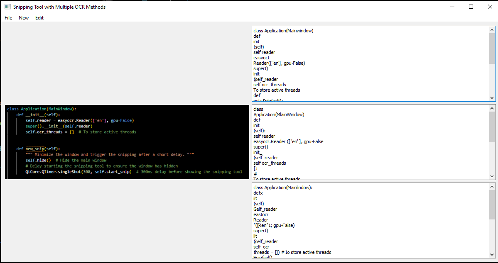

Date: September 2024
Tools Used: Python, OpenCV, EasyOCR, PyQt5
Project Overview
This project provides a desktop tool built with PyQt5 that allows users to snip a portion of their screen and extract text from it using OCR (Optical Character Recognition). The application utilizes EasyOCR, OpenCV, and different image preprocessing techniques to maximize accuracy and versatility in text detection.
Project Workflow
Image Snipping
The snipping functionality allows users to select any part of the screen for text extraction. The captured image is then processed and converted into a format suitable for OCR.
OCR Processing Methods
Three methods are applied to extract text from the snipped images:
- Method 1: Standard OCR with no additional preprocessing.
- Method 2: Upscaled image for improved recognition of pixelated text.
- Method 3: Advanced preprocessing, including thresholding and morphological transformations, to enhance text detection in challenging images.
Conclusions
The tool provides users with a powerful, easy-to-use interface to capture and extract text from images directly on their screen. It is ideal for quick data extraction from screenshots, especially for text-heavy content.